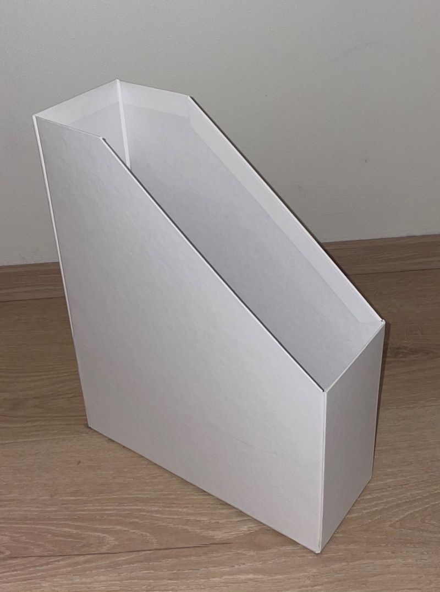

Verkefni 2
Tölvustuddur skurður
Verkefnislýsing
Verkefnið skiptist í raun í tvennt en fyrsti hlutinn snýst um að nota vínylskera til að búa til límmiða. Seinni hlutinn snýst síðan um það að hanna parametrískt, geirneglt módel af byggingareiningum. Módelið þarf að vera skalanlegt á mismunandi máta (efnisþykkt, hæðir og breiddir), útfært með góðum parametríum í hugbúnaði að eigin vali. Hönnunin þarf að auki að innihalda a.m.k. 3 geirneglda festi punkta. Í þessum seinni hluta þarf einnig að velja geislaskera og ákvarða með kerf með prófunum fyrir þann skera.
Vínylskurður
Það fyrsta sem ég gerði var að hlaða niður forritinu Inkscape sem mælt var með að nota. Eftir að hafa hugsað svo í nokkurn tíma um hvers konar mynd ég gæti notað í þessum hluta ákvað ég að lokum að velja mynd af mér í golfi. Þetta er mynd af mér að taka upphafshöggið á fyrstu holu Golfklúbbs Mosfellsbæjar.
Ég þurfti hins vegar að breyta myndinni nokkuð þannig að hún hentaði verkefninu en ég byrjaði á því að fjarlægja bakgrunninn með síðunni remove.bg. Svo gerði ég myndina alveg svarta með Canva en ég notaði einnig Canva til að búa til ferilskrána mína. Ég fylgdi myndbandi af Youtube til að gera myndina alveg svarta. Eftir þetta leit myndin svona út:
Það sem ég gerði næst var að opna myndina í Inkscape en þar valdi ég Trace Bitmap til að breyta myndinni frá því að vera pixluð yfir í að vera úr vigrum eða línum. Einnig þurfti að breyta nokkrum stillingum í Fill and Stroke þar sem línuþykktin var stillt sem 0.02 mm en eftir þetta var myndin tilbúin fyrir skurðinn og leit svona út:

Hafliði aðstoðaði mig við notkun vínylskerans en þar ákvað ég að nota hvítt efni fyrir límmiðann. Það þurfti svo að setja límband yfir límmiðann til að losa hann frá efninu sem er frekar þunnt. Ég ákvað að setja límmiðann á tölvuna mína en þá setti ég þetta allt á tölvuna og losaði límbandið til að festa límmiðann við tölvuna. Að lokum lítur þetta svona út hjá mér:
Geislaskurður
Nú var komið að því að ákveða hvað ég vildi hanna til að skera út með geislaskeranum. Ég var alveg tómur fyrst og ekki viss hvað ég vildi gera en ég vissi þó að ég vildi gera eitthvað gagnlegt sem gæti nýst mér en ekki eitthvað sem ég myndi gera hér og nota svo ekki neitt. Ég fór þá að líta í kringum mig í herberginu mínu til að reyna finna upp á einhverju sem gæti nýst mér vel og eftir nokkurn tíma fékk ég ágætis hugmynd. Ég áttaði mig á því að í nokkuð langan tíma hef ég bara verið að geyma gítar nóturnar mínar á nótnastatífinu mínu þar sem þær eiga það til að detta niður því þær eru orðnar svo margar.
Ég ákvað því að búa til box þar sem ég gæti geymt nóturnar. Til hliðsjónar hafði ég eftirfarandi box sem var í herberginu mínu og í notkun fyrir önnur blöð.
Ég byrjaði þá að rissa upp hvernig ég vildi að boxið liti út og ákvað stærðir, sjá mynd:
Eins og má sjá á myndinni að ofan rissaði ég upp fjórar hugmyndir og ákvað að lokum að velja hugmynd númer 3. Ég ákvað þessar stærðir síðan út frá stærð A4 blaðs og hafði einnig til hliðsjónar boxið úr herberginu mínu sem ég sýndi að ofan.
Þessar myndir tók ég með símanum mínum og fannst mér þær stærðin þeirra vera aðeins of stór þannig að ég ákvað að smækka þær. Það gerði ég með því að opna viðeigandi mynd og fara í resize image og þar var hægt að minnka þær svo þær tækju minna pláss eins og sjá má á eftirfarandi mynd:
Áður en haldið var lengra með þetta þurfti hins vegar að ákvarða kerf geislaskerans þ.e. breidd geislans.
Kerf prófun
Þennan hluta mátti vinna 3 saman í hóp en ég vann með Örvari Erni og Agli Smára. Það sem við gerðum var að teikna 10 ferninga hlið við hlið í Fusion sem allir voru 10 mm á breidd og hæð. Við vistuðum þá sem dxf skrá og færðum yfir í Inkscape til að hægt væri að skera þá út í geislaskeranum. Við ákváðum svo að nota 3 mm þykkan svartan akríl sem efnið í verkefninu. Þegar búið var að skera út ferningana gátum við ákvarðað kerfið með því að nota skífumál til að mæla lengdina á kössunum samanlögðum og lengdina á gatinu sem var eftir í efninu. Kerfið er svo einfaldlega munurinn á þessum lengdum deilt með fjölda lína sem eru 11 þar sem við erum með 10 ferninga. Eftir mælingar fengum við að lengdin á gatinu væri 100.02 mm og lengd kassana væri 98.94 mm en munurinn á því er 1.08 mm og þegar við deilum 11 upp í það fáum við út að kerfið sé 0.09818 mm.
Hönnun og teikning í Fusion
Þegar þetta var komið þurfti ég að ákveða hvaða hugbúnað ég ætlaði að nota hér en mælt var með Autodesk Fusion 360 og því ætla ég að nota það. Ég hlóð þá Fusion niður og byrjaði á því að prófa mig áfram í því þar sem ég hef ekki notað Fusion áður. Hönnunin þurfti að vera útfærð með góðum parametríum og vera skalanleg á mismunandi máta en til þess að tryggja það fylgdi ég eftirfarandi myndbandi sem útskýrði mjög vel hvernig hægt er að nota parametra í hönnuninni. Hér að neðan má svo sjá þá parametra sem notaðir voru við hönnunina.
Þegar ég var búinn að teikna þetta allt leit boxið að lokum svona út:
Næsta skref er að undirbúa þetta fyrir geislaskurðinn en ég horfði á eftirfarandi myndband til að aðstoða mig við það. Það sem fyrsta sem ég gerði var að leggja allar hliðarnar niður að sama fletinum, hér fattaði ég hins vegar að ég gæti verið að lenda í smá vandræðum með stærðina á boxinu. Það sem við höfum að vinna með er 500x500 mm plata og mér var ekki alveg að takast að koma þessu öllu fyrir í þeirri stærð. Það sem ég gerði því var að stytta lengdina um 10 mm og breiddina einnig um 10 mm. Eftir að ég hafði gert þessar breytingar komst þetta fyrir og leit svona út en þessu verður svo raðað enn betur í Inkscape.
Næst er að stilla kerfið en þá er byrjað á því að fara úr Design í Manufacture. Þar býr maður til nýtt Setup en þar er mikilvægt að z-ásinn snúi upp, sjá að neðan.

Síðan er það að gera nýtt 2D profile í Cutting sem er undir Fabrication en þar búum við til nýtt verkfæri eða tool og þar er valinn Laser Cutter.
Þar inni stillum við kerfið sem við höfðum mælt áður að væri 0.09818 mm. Veljum svo öll yfirborðin í Geometry og síðasta skrefið er að fara inn í Post Process. Þar inni í Post á maður að velja dxf sem ætti að koma upp þegar maður leitar að því en það var hins vegar ekki að koma upp hjá mér. Þetta var vandamál sem tók ágætan tíma að leysa en mér tókst að finna út úr þessu að lokum. Ég leitaði að eftirfarandi: ''fusion 360 post library empty'' og fékk þá þetta upp. Það sem ég fylgdi var neðsti punkturinn á síðunni sem var að hlaða niður dxf skránni frá Fusion 360's online library.
Þessu þurfti ég að hlaða í 'cloud postið' mitt sem ég gerði með því að fylgja eftirfarandi leiðbeiningum sem fylgdu í þessum neðsta punkti. Það fyrsta sem þurfti að gera var að haka í boxið Enable Cloud Libraries í Preferences sem er efst í hægra horninu í Fusion. Síðan eru tveir valkostir í boði en ég valdi valkost 2 sem virkaði þannig að maður hlóð þessu upp í gegnum Data Panel. Þar inni fór ég inn í CAMPosts í Assests og hlóð fælnum þar upp og þar með gat ég loksins haldið áfram að fylgja skrefunum úr leiðbeiningamyndbandinu. Ég gat nú valið AutoCAD DXF og maður þurfti að passa að haka í eftirfarandi tvo box:
Þar með var hægt að opna skrána í Inkscape. Það sem fyrsta sem ég gerði í Inkscape var að velja allar hliðarnar og ýta á CTRL+G því annars gat maður fært hverja og eina línu. Ég stillti svo stærðina á vinnusvæðinu með því að fara í Document Properties í file og valdi þar 500x500 mm þar sem það er stærðin sem við höfum að vinna með. Ég raðaði svo öllu inn á svæðið eins og sjá má að neðan:
Næst þarf að 'ungroupa' þetta sem er gert með CTRL+SHIFT+G og einnig að stilla allt rétt í Fill and Stroke. Það er No paint í Fill, Flat color í Stroke paint og stilla breiddina í Stroke style sem 0.02 mm. Þá var síðasta skrefið að vista þetta sem svg skjal og er þetta þar með tilbúið fyrir skurðinn!
Geislaskurður og samsetning
Nú var komið að því að skera boxið mitt út í geislaskeranum í 'Fab Lab' aðstöðunni í VR-III. Áður en farið var í að skera allt út var nauðsynlegt að gera prufur til að sjá hvort að kerfið sé rétt. Það sem ég gerði þá var að velja lítinn bút af botninum og bakinu á kassanum til að athuga hversu vel þetta myndi passa saman.
Það var líka eitt í viðbót sem þurfti að athuga en það var að mæla hvort að þykktin á akríl plötunni væri í raun 3 mm. Þykktin var mæld með skífumáli og þá kom í ljós að þykktin væri 2.7 mm. Núna kom það sér vel fyrir að hönnunin væri parametrísk því ég þurfti ekki að byrja upp á nýtt heldur aðeins að breyta þykktar parametríunni í Fusion úr 3 mm í 2.7 mm. Nú gat ég skorið út fyrstu prufuna og leit hún svona út:
Þetta var með kerfinu 0.09818 sem við höfðum mælt áður en það kom í ljós að þetta var ekki nógu mikið þar sem að prufurnar pössuðu ekki nógu vel saman. Þær féllu ekki nógu þétt að hvorri annarri en lausnin á því er einfaldlega að auka stærðina á kerfinu inni í Fusion. Ákveðið var að auka það um 50% fyrst og því var kerfið í annarri prufu 0.15 mm. Farið var í gegnum sömu skref og áður til að skera prufurnar út og útkoman var aðeins skárri í þetta sinn. Þetta var hins vegar ekki alveg nógu gott þar sem prufurnar smullu ekki enn fullkomlega saman, þær voru enn smá lausar þegar þær voru settar saman. Því var kerfið aukið enn einu sinni og nú í 0.2 mm. Hér í þriðju prufu var þetta hins vegar of þröngt þar sem það var alltof erfitt að smella prufunum saman. Það var því ákveðið að minnka kerfið um 0.02 mm þ.e. í 0.18 mm og nú vonaði ég innilega að þetta myndi heppnast þar sem að það hafði farið dágóður tími í að gera þessar prufur. Það rættist sem betur fer því hér í fjórðu prufu var gott gildi á kerfinu loksins fundið þar sem að prufurnar pössuðu nú vel saman, sjá mynd að neðan.
Þá gat ég loks klárað það að skera út boxið mitt. Í stað þess að nota bara heila plötu til að skera allt út í einu var þessu skipt í tvo hluta þar sem afgangar voru nýttir í skurðinn til að spara efni. Skurðurinn gekk síðan vel en það var smá vesen að setja boxið síðan saman þar sem það þurfti að nota ágætan kraft til að smella öllu saman en það gekk þó að lokum. Hér má sjá hvernig lokaútkoman lítur út:
Hér má svo sjá hvernig þetta lítur út með nótunum í boxinu:
Ég er gríðarlega sáttur með hvernig þetta kom út að lokum þar sem að nóturnar passa fullkomlega í boxið og þetta er hlutur sem mun nýtast mér mjög vel. Nú eru næstu skref að fara hugsa um hvað ég ætla að þrívíddarprenta og skanna í næsta verkefni.
Það átti einnig að hlaða teikningunni sinni upp á einhvers konar gagnabanka eins og Thingiverse, Thangs eða Makerworld. Ég ákvað að búa til aðgang á Thingiverse og exportaði Fusion skjalinu sem stl skrá þangað. Ég setti einnig nokkrar myndir með af boxinu og þá var þetta tilbúið til að hlaðast upp á Thingiverse. Þetta birtist hins vegar ekki strax þar sem að upp komu þau skilaboð að það gæti tekið allt að 24 klst fyrir hlutinn að birtast á vefsíðunni fyrir nýja notendur.
Eftir meira en 24 klst kíkti ég á Thingiverse og þá var þetta enn ekki búið að birtast
Ég ákvað því að prófa Thangs í staðinn. Ég bjó til aðgang þar og hlóð öllu upp eins og áður. Þetta birtist svo bara strax um leið og ég vistaði breytingar og þar með var þetta komið. Sjá efst í leitinni hér eða inni í hlutnum hér.
Tími sem fór í hvern verkþátt
| Nr | Verkþáttur | Klukkutímar |
|---|---|---|
| 1 | Undirbúningur/Leit að hugmyndum | 3 |
| 2 | Vínylskurður | 2 |
| 3 | Kerf prófun | 1 |
| 4 | Vinna í Fusion | 7 |
| 5 | Geislaskurður og samsetning | 4 |
| 6 | Vefsíðugerð | 9 |
| 7 | Gagnabankar | 1 |
| Heildartími | 27 |